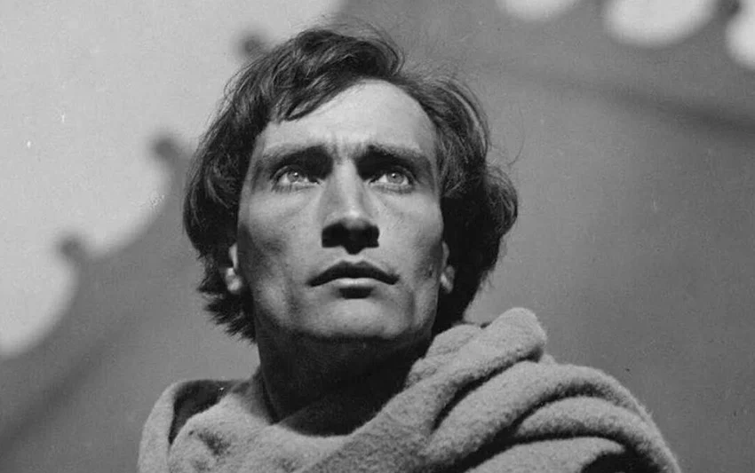
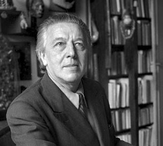
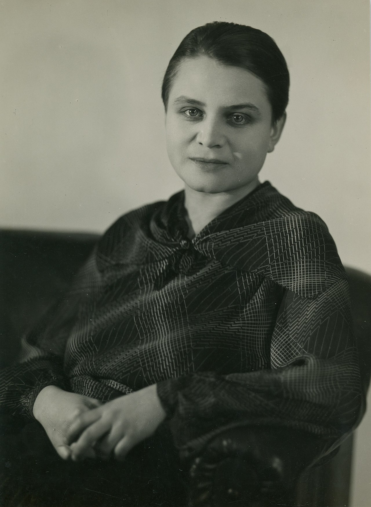

La palabra surrealista la empleó por primera vez Apollinaire en 1917. A partir de entonces, se convirtió en un término usado con frecuencia por André Breton y los colaboradores de la revista Literatura. Al principio se trataba de un asunto fundamentalmente literario, como lo había sido el Futurismo. La pintura surrealista aparece en escena desde la exposición de 1925 en la Galería Pierre, con artistas como Arp, Max Ernst, Man Ray, Klee, Girgio de Chirico, Miró o Pablo Picasso, a los que se añadirían Dalí y Magritte.


- 
- 
- 
EXPONENTES DEL SURREALISMO
Una de las características de los artistas surrealistas, es demostrar que el inconsciente es la fuente de la imaginación. Así, este movimiento artístico que comenzó en Francia en la década de 1920 con el “Manifiesto surrealista” de André Breton, ha tenido grandes exponentes a lo largo de la historia.